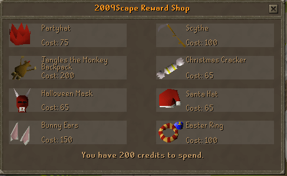
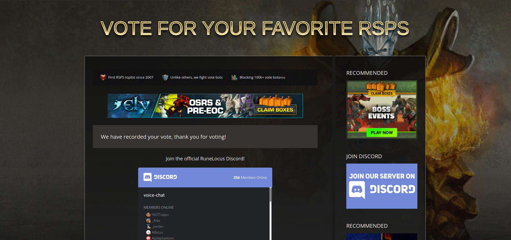

Credits
One of the biggest questions that has always been asked is what is our Credit System. As many of you know Credits are 100% exclusive to 2009scape. But what are credits you ask? Credits are the 2009scape's currency for rare items. Is it like a donator shop? With it's own custom interface you won't be mistaken that it has anything to do with any custom private server. Credits are our way of saying thank you for doing something. I'm going to go over all the different methods of earning credits. 
Voting Everyone who has been actively a part of discord understands that this may be by far the easiest way to earn
a credit. All you need to do in order to get a credit is vote on Rune locus. You may ask yourself the question
why do we want you to vote? how does this help us? The higher we get on the list the more exposure we may get to
get more players in return this helps contribute to building the server. Every so often our discord bot will post
the link to vote but if it hasn't and you'd like the link just use the command ::vote inside of discord.
Once you've voted, take a screenshot of your page, and then post inside of the #claim-to-fame section of Discord.

After you have voted you will receive a total of one credit every 12 hours so this method could easily earn you an average
of 60 credits a month. In March of 2021 we have introduced a new system called our voting streak system which if a player
has voted for seven consecutive days you will recieve five credits for your first vote on your seventh day. Once you've
earned the streak it starts over at day one for you to get it again the following week by voting all week again. Keep in
mind for the voting streak you only need to vote once a day. We are based off of California time for how I'm reporting days.
This might mean for people over seas that your end of the day will not be California's end of the day therefore you will
still have a bit more time for you to vote. If you miss a day of voting your voting streak will be reset and you will need
to vote seven days in a row all over again.
Ah yes, we have made it to the pride and joy of a game where our accomplishments are not only rewarded by a fantastic skill cape
or bragging rates but also can claim your right to the first to a 99 in a skill and get credits and recognition on our website for
their achievements. It is determined by different different experience rates and ironman modes to determine how many credits someone
may get.
These Hall of fame rewards were completely rewritten to fit the amount of effort one puts into their account.
- x1 xp rate: 200 credits
- x2.5 xp rate: 100 credits
- x5 xp rate: 40 credits
- x10 xp rate: 20 credits
- x20 xp rate: 10 credits
If you know we are known as the Open Source project. We once had an Open Source Live server but people would non stop exploit the game by reading the code making it so we now needed to close source the live. This does not mean that our drop tables and spawns are not able to be seen or worked on. If you work on spawn rates, drop lists, or item spawns you will be rewarded with 10 credits per 100 changed lines. In order to do this you will need to go into the source on our github and find the configs under the Data folder. You will correct what you need to correct and then create a PR for your fixes. These may take sometime to enter live so please have patience. By working on these you are helping improve the game by getting it closer to authenticity of 2009 and you are saving developers time for adding content in the game.
Quest DialogueSimilar to the JSON contributions this is the next way you can help without needing to know how to program. There are several youtubers who have videos from 2008-2009 where you can see the dialogue word for word through their chat options. This is the number on preferred way since it keeps it the most accurate to 2009. You can use OSRS as a reference but please be careful doing this incase OSRS has changed something and didn't document it well. By doing this you are speeding up the developer's time by getting all the dialogue together and will be rewarded with 10 credits.
Events
In 2009 a lot of us played the game because it was a fun game that we could come home to and play with our friends. The game had just
as much a social aspect as it did a grind aspect.
Official Server events that are hosted by Our Community Manager, Kermit,
will come with a reward of credits as well. If you attend one of the server events you will get 5 credits for participation to be motivation
to set the grind aside to come have some fun.
Player Hosted Offical Events : Can vary from house parties, to bossing events, etc. To bring more people together instead of being
a constant player 1 skills on this side of the map and player 2 skills on that side of the map we want to encourage you to create your own events.
Do note to take these serious because all events will be filtered/needing approval from our Community Manager.
It is five credits per player for attending said events and it is 2 credits per person that shows up for the person hosting the event on top of
your participation. Player hosted will be announced offically once but it's up to the player to fully plan out the event.